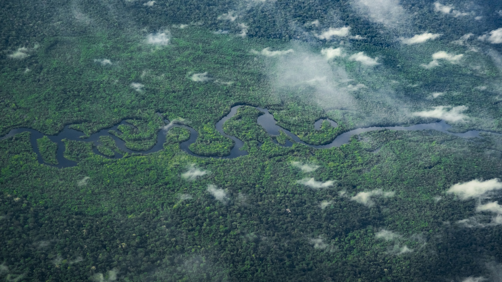

A legnagyobb esőerdő
Az Amazonas-esőerdő amelyet gyakran a „Föld tüdejeként” is emlegetnek a világ legnagyobb és legfajgazdagabb trópusi esőerdője, amely kilenc dél-amerikai ország területére kiterjedve az Amazonas-medencét borítja. Ez a hatalmas ökoszisztéma a Föld még megmaradt esőerdőinek több mint a felét teszi ki, és több millió növény-, rovar-, madár- és emlősfajnak, valamint számos elszigetelt őslakos törzsnek ad otthont. Globális jelentősége felbecsülhetetlen, mivel a fái óriási mennyiségű szén-dioxidot kötnek meg, így kulcsfontosságú szerepet játszanak a klímaváltozás lassításában és a bolygó időjárási rendszereinek szabályozásában.

Kvíz
Ismered ezt a 10 érdekességet az esőerdőkről? Teszteld a tudásodat egy 10 kérdéses Igaz-Hamis kvízzel!